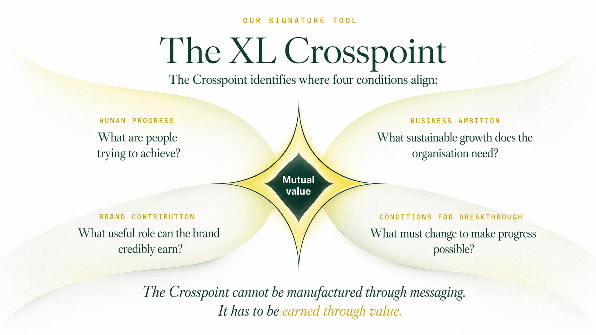

People seek progress. Businesses seek growth. Marketing creates value when it connects the two.
People are already trying to solve problems and move their organisations forward. A brand earns a role by helping them achieve that progress — and earns sustainable growth by creating value people can recognise, trust and experience.
One method, four disciplines
We turn uncertainty into clear, confident decisions for your business. Make sense of what is changing, decide what matters, design the right response and learn what moves people and the business forward.
- Understand — map the progress people are pursuing, and what stands in their way.
- Decide — locate the Crosspoint and identify the single decision that matters most.
- Design — build the brand, experience, communications and commercial activity required to support that movement.
- Learn — measure what changed, what didn't, and what should happen next.
What needs to change for people and the business to move forward?
A more disciplined way to grow
Decisions are only as strong as the evidence fuelling them. For better commercial impact, we start by upgrading the quality of your information and the questions you ask.
We look past the surface to identify:
- What progress your buyers are actually trying to make
- What makes their buying decision difficult today
- What information, proof or experience would remove that friction
- The most valuable role your brand can legitimately earn
- The metrics that will prove whether we are actually making progress
The result is a clear, defensible basis for action, execution and learning — not another document that sits on a shelf.
The XL Crosspoint
The sweet spot where your business goals and your customers' needs align to create value for everyone.
- Human progress
- What are people trying to achieve?
- Business ambition
- What sustainable growth does the organisation need?
- Brand contribution
- What useful role can the brand credibly earn?
- Conditions for breakthrough
- What must change to make progress possible?
Better decisions start with better data — if your information is flawed, your strategy will be, too.

Authority comes with accountability. We define the exact contribution marketing is expected to make, and we accept responsibility for the work within our control.
- We rely on evidence. We distinguish hard market evidence from assumptions and internal interpretation.
- We measure progress, not just activity. We track customer value and commercial outcomes, not vanity metrics.
- We respect boundaries. We identify exactly what marketing can influence, and what depends on product, pricing, sales or market conditions.
- We build trust. We do not use communication to disguise an unsuitable product or treat human limitations as vulnerabilities to exploit, and we design for informed, voluntary decisions.
The same method, adapted to different decisions
The same evidence-led method, adapted to the specific growth decisions you need to make today.
Have a growth decision you're not confident in?
The first conversation is a structured discussion about the decision, the evidence and the next move — not an immediate proposal.